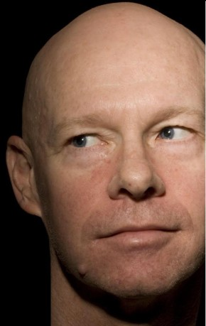

#2453 König der Fischer
Alternativ: The Fisher King
Auszeichnungen: 1 Oscars gewonnen für 4 Oscars nominiert 2 GoldenGlobes gewonnen


 IMDB-Wertung: 7.6 / 10
IMDB-Wertung: 7.6 / 10  Metascore: 61
Metascore: 61 
Ein paar unbedacht geäußerte Worte des Radiomoderators Jack Lucas geben einem geistesgestörten Hörer Anlaß zu einem blutigen Amoklauf. Von Schuldgefühlen geplagt, hängt Jack seinen Job an den Nagel und landet in der Gosse. Dort freundet er sich mit dem verrückten Penner Parry an, der stets von einem "Roten Ritter" und dem heiligen Gral träumt und "König der Fischer" genannt wird. Jack erholt sich derweil von seinem Trauma, findet Halt bei seiner Freundin und hilft Parry beim Anbandeln mit der schüchternen Lydia. Doch eines Tages wird Parry brutal zusammengeschlagen und fällt in Koma. Jack weiß, wie er seinen Freund retten kann: Er muß unbedingt den heiligen Gral finden.
Jahr: 1991
Dauer: 137 Minuten
FSK: 16
Land: USA Studio: TriStar PicturesTonspuren: DD2.0 - ,
Untertitel:
Auflösung: 1080p (1920x1040) Größe: 10065 MB
Genre: Komödie, Drama
Regisseur:  Terry Gilliam
Terry Gilliam
Drehbuch: Richard LaGravenese
Soundtrack: George Fenton
Darsteller:
 Jeff Bridges als Jack
Jeff Bridges als Jack David Hyde Pierce als Lou Rosen
David Hyde Pierce als Lou Rosen- Ted Ross als Limo Bum
- Lara Harris als Sondra
 Mercedes Ruehl als Anne
Mercedes Ruehl als Anne Kathy Najimy als Crazed Video Customer
Kathy Najimy als Crazed Video Customer Harry Shearer als Sitcom Actor Ben Starr
Harry Shearer als Sitcom Actor Ben Starr Jayce Bartok als First Punk
Jayce Bartok als First Punk- Dan Futterman als Second Punk
 Robin Williams als Parry
Robin Williams als Parry- Bradley Gregg als Hippie Bum
 Stephen Bridgewater als Porno Customer
Stephen Bridgewater als Porno Customer Amanda Plummer als Lydia
Amanda Plummer als Lydia Michael Jeter als Homeless Cabaret Singer
Michael Jeter als Homeless Cabaret Singer- Richard LaGravenese als Strait Jacket Yuppie
 Diane Robin als Receptionist
Diane Robin als Receptionist Christian Clemenson als Edwin
Christian Clemenson als Edwin Carlos Carrasco als Doctor
Carlos Carrasco als Doctor John de Lancie als TV Executive
John de Lancie als TV Executive Pat Fraley als Radio Show Call-In
Pat Fraley als Radio Show Call-In- Ruben Dario Cruz II als Dancer / New Yorker , uncredited
 Kevin Fennessy als Diner , uncredited
Kevin Fennessy als Diner , uncredited Ray Huffman als Dancer in the Park , uncredited
Ray Huffman als Dancer in the Park , uncredited Jack Mulcahy als Passerby , uncredited
Jack Mulcahy als Passerby , uncredited Peter Austin Noto als Homeless Man , uncredited
Peter Austin Noto als Homeless Man , uncredited Tom Waits als Disabled Veteran , uncredited
Tom Waits als Disabled Veteran , uncredited- Adam Bryant als Radio Engineer
- Paul Lombardi als Radio Engineer
- Warren Olney als TV Anchorman
- Frazer Smith als News Reporter
- Melinda Culea als Sitcom Wife
- James Remini als Bum at Hotel
- Mark Bowden als Doorman
- John Ottavino als Father at Hotel
- Brian Michaels als Little Boy
- William Jay Marshall als Jamaican Bum
- William Preston als John the Bum
 Al Fann als Superintendent
Al Fann als Superintendent- John Heffernan als Stockbroker Bum
- Chris Howell als Red Knight
- Anita Dangler als Bag Lady
-  Mark Bringelson als Drooler
- Johnny Paganelli als Pizza Boy
- John Benjamin Red als Motorcyclist
- Lisa Blades als Parry's Wife
- Joe Jamrog als Guard
- Lou Hancock als Nurse
- Caroline Cromelin als Radio Show Call-In
- Kathleen Bridget Kelly als Radio Show Call-In
- Kristen Connors als Ballroom Dancer , uncredited
Datei: X:\1991\König der Fischer (1991, FSK16, 1920x1040).mkv seit 11.11.2015
Festplatte: HD 1987-1991
 Es gibt insgesamt 53 Filme in der Gruppe '1991'
Es gibt insgesamt 53 Filme in der Gruppe '1991'